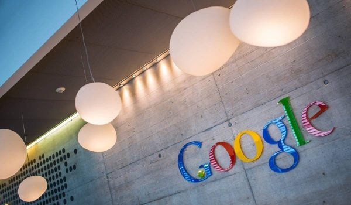

Pourquoi Google rachète 10 millions de dollars les mails et données internes d’une compagnie aérienne en faillite

🛒 En lien avec cet article
Publicité — Liens de partenariat Amazon : une commission peut être reversée, sans surcoût pour vous.
🔥 Top produits tech du moment
🛒 Voir le prix : iPhone 16 Pro
🛒 Voir le prix : PlayStation 5
🛒 Voir le prix : Logitech MX Master 3S
Publicité — Liens de partenariat Amazon : une commission peut être reversée, sans surcoût pour vous.
L'intelligence artificielle continue de transformer en profondeur notre quotidien et l'économie. Cette annonce s'inscrit dans une dynamique où les grands acteurs accélèrent leurs investissements et leurs lancements.
Ce qu'il faut retenir
Spirit Airlines a rencontré des difficultés après le Covid.
Elle a donc été placée en faillite en août 2025.
Ses avions ont cessé de voler en mai 2026.
Toutefois, la compagnie low cost avait encore ses données à vendre.
Pourquoi c'est important
Cette information marque une nouvelle étape dans le développement de l'intelligence artificielle. Elle concerne directement les utilisateurs de technologies numériques et mérite d'être suivie de près dans les prochaines semaines. Pourquoi Google rachète 10 millions de dollars les mails et données internes d’une compagnie aérienne en faillite est ainsi un signal à prendre en compte pour comprendre les évolutions du secteur.
En résumé
Retenez l'essentiel : Pourquoi Google rachète 10 millions de dollars les mails et données internes d’une compagnie aérienne en faillite. Cette actualité a été rapportée par Siecle Digital. Nous continuerons de suivre ce sujet et de vous tenir informés des prochaines évolutions.
🚀 Vous êtes freelance tech ?
Calculez votre TJM en 30 secondes : micro-entreprise, SASU, EURL ou portage salarial. Gratuit, taux 2025.
Calculer mon TJM →Source : Siecle Digital